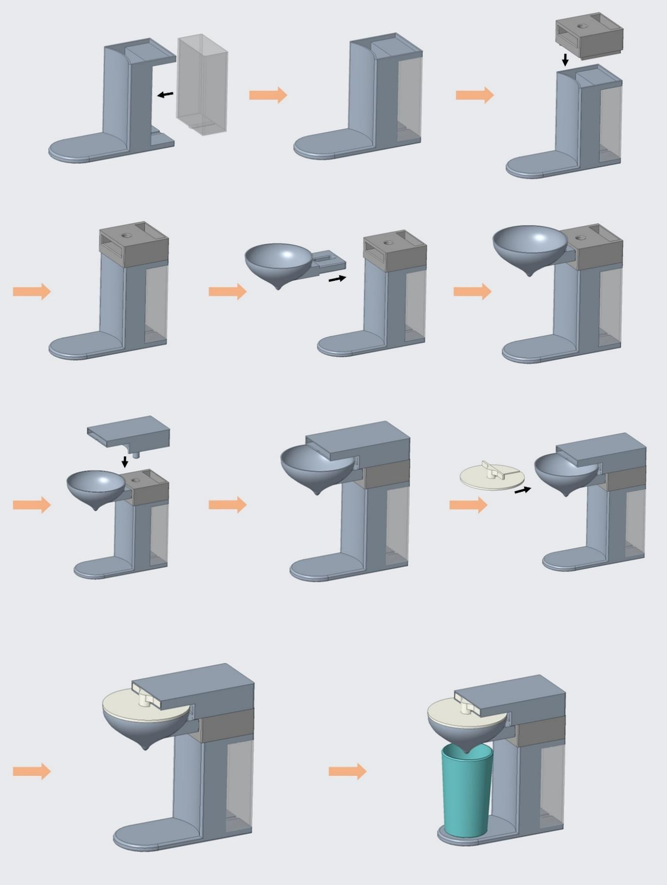

Welcome to my very first website. I'm learning how to build the web!
Last semester, the coffee machine shown in the following figure
was studied and analyzed in order to assess its ecological impact from cradle to grave
but excluded the environmental impact of:
- Raw material extraction and preparation for production use (Cradle)
- Transport of raw materials to the factory warehouse (Gate)
- Transport from the buyer’s home to the store and back (Gate)
- Transport from the buyer's home to the waste disposal center (Gate)
The object was also disassembled in order to identify the different materials and processes
used for its manufacturing, and a supply chain route was identified.
A life-cycle assessment (LCA) was then realized on SimaPro thanks to the previously obtained information.
This semester’s project is a continuation of last semester’s.
The aim of this new project is to eco-redesign this coffee machine and present the solution(s) found.
Eco-redesigning a product means lowering its environmental impacts while maintaining its initial functionalities.
In order to find and define a solution, the group gathered during a workshop and brainstormed ideas,
each with their own benefits and drawbacks.
Now its your turn to do the thing yourself! You may have a look at a brilliant example from a student group
down below that implemented modulability and a circular business model for their new design.
Please review the following assembly guide, that illustrates the different joint types used in the assembly.
Thank you for visiting my website! Have a lovely day!